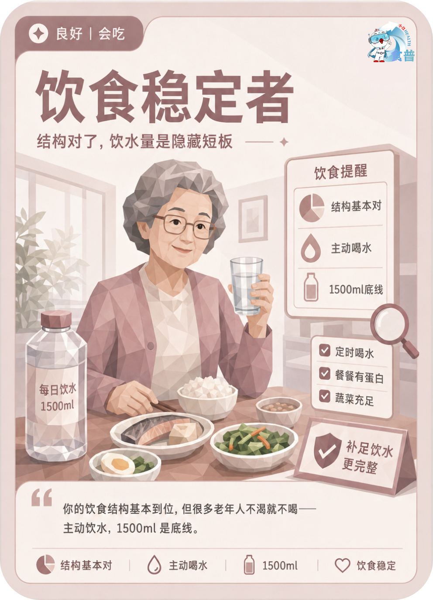

老年人群
良好
会吃
E09
饮食稳定者
结构对了,饮水量是隐藏短板
你的饮食结构基本到位,但很多老年人不渴就不喝——主动饮水,1500ml 是底线。
手机端可点击“打开原图”后长按图片保存；也可以直接长按上方图卡保存。

结构对了,饮水量是隐藏短板
你的饮食结构基本到位,但很多老年人不渴就不喝——主动饮水,1500ml 是底线。
手机端可点击“打开原图”后长按图片保存；也可以直接长按上方图卡保存。